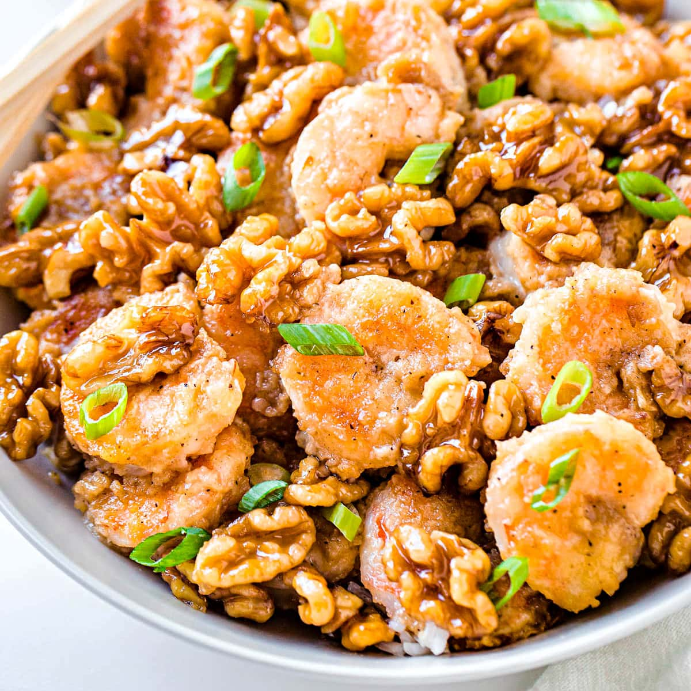

Honey Walnut Shrimp

Description:
This honey walnut shrimp is a Hong Kong-style recipe! Crispy battered shrimp are tossed in a creamy sauce and topped with sugar-coated walnuts.
Ingredients:
1 cup water
2/3 cup white sugar
1/2 cup walnuts
4 large egg whites
2/3 cup mochiko
1 cup vegetable oil (for frying)
1 pound large shrimp (peeled and deveined)
1/4 cup mayonaisse
2 tablespoons honey
1 tablespoon condensed milk